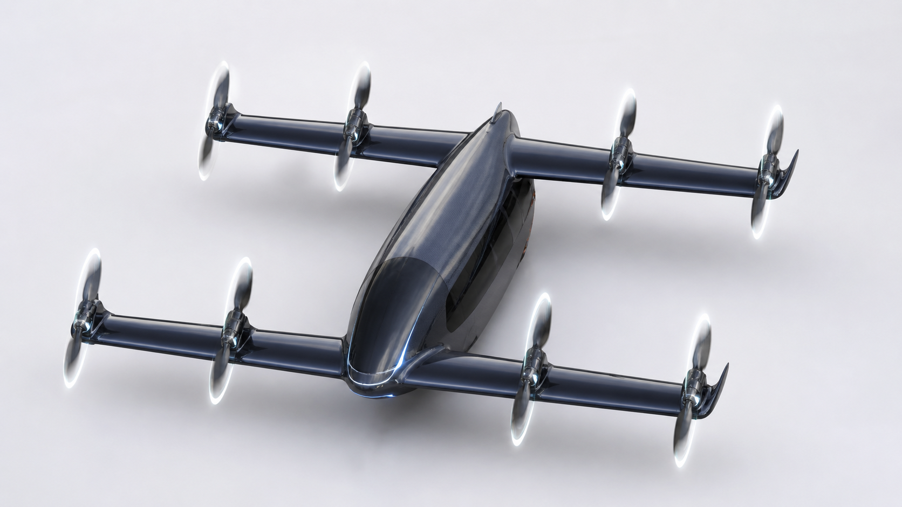
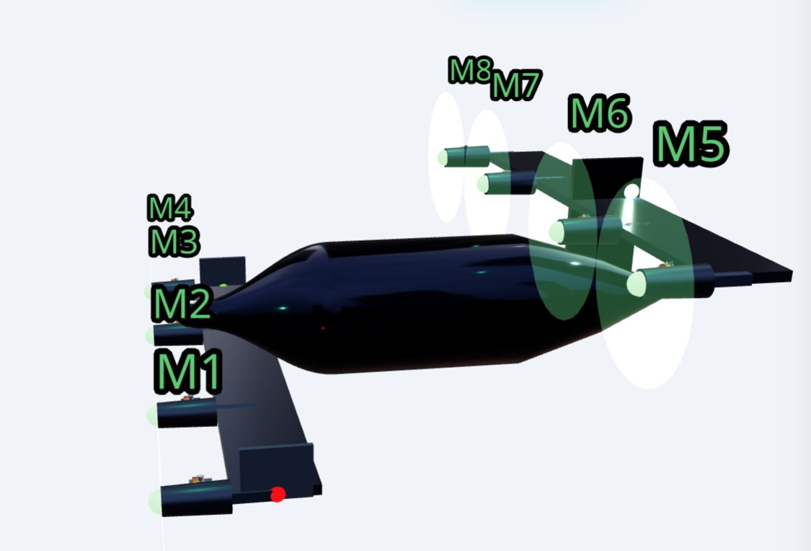

- 非同期ティルトローター：滑走路なしで離陸し、固定翼として遠くまで飛びます。
- 固定翼巡航：マルチコプターのエネルギー限界なしに200〜1,000kmをカバーします。
- 離散マトリクスFlight OS：路線別の反復運航データと耐空データを同時に蓄積します。
トラックより安く、旅客機より安全に飛ぶ。
時間損失が輸送費より高い区間から押さえます。

機体が単純なため、協力範囲が広がります。
- 操縦面のない構造：アクチュエータ、ヒンジ、リンクがなく、製造・整備協力が容易です。
- 固定ピッチローター：可変ピッチなしで反復運航でき、整備費が低い推進構造です。
- IPライセンス・部品エコシステム：機体、Flight OS、運航回廊単位で多様な協力が可能です。
SDA Visual


非同期ティルトローターの 飛行例
PLATFORM
分散推進航空ロボット
8基の推進器を一つの飛行体構造の中でソフトウェア制御します。
LAYOUT
Staggerベースの仮想操縦面
操縦面がないため、機体の製作費は1/10へ低減されます。

CONTROL
差動推力ベース制御
機体の段差と離散マトリクスを基に仮想操縦面を制御して飛行します。
CONTROL LOGIC
8基の推進器はそれぞれ異なる動きをします。
内側と外側の推進器を分けて段階的にティルトし、飛行モードごとに制御権を移すSDA遷移構造です。
01
垂直離陸
8基の推進器が垂直推力で離陸します。
02
第1ティルト
一部の推進器が先に遷移を始めます。
03
制御権の移行
垂直推力と水平制御を同時に扱います。
04
第2ティルト
残りの推進器が巡航方向へ移行します。
05
水平制御権
遷移完了後、全体の水平制御権を確保します。
06
水平巡航
固定翼巡航で距離と経済性を確保します。
出発点
コスト構造を見る
協力を相談する
役割を見る
IP構造を見る
資本投資の経路を見る
日本向け経路を見る
韓国向け経路を見る
ドローン企業向け経路を見る
個人投資家向け経路を見る
どのような協力を お探しですか。
資本投資
資本投資機体1億ウォン、ライフタイム売上50億ウォン、目標マージン50%。フリート、運航権、Flight OS、MROへ拡張する反復収益構造です。
技術協力
技術協力UAMの遷移飛行安全ケースが必要なら、SDAの検証可能な非同期ティルトシナリオが協力の出発点です。
人材
人材任務を先に定義し、機械を逆算して作るチームです。制御、シミュレーション、ハードウェア、Physical AIを一つの場で扱います。
技術
アーキテクチャ登録1件、出願4件。非同期ティルト、仮想操縦面、離散制御、無動力高揚力、仮想ピトー管。
VC / 資本
資本回収核心は航空機スペックではなく、回廊別の反復運航から生まれるフリート経済性です。機体単価、整備費、運航率、耐空維持データがそろう瞬間、1億ウォン級運航資産は生涯売上を生む物流インフラになります。
地方自治体（日本）
地方自治体物流回廊が一つ生まれると、組立工場、MRO拠点、運航人材が地域に残ります。釜山港 ↔ 日本本土が最初の候補です。
地方自治体（韓国）
地方自治体一過性のドローン実証イベントではありません。離島、産業団地、医療区間に、反復運航できる公共物流路線を設計します。
ドローン企業
ペイロードクラスの拡張機体構造、Flight OS、シミュレーション、運航回廊をモジュール単位で協業します。マルチコプターの次のクラスを共につくることができます。
個人投資家
初期ストーリーエアタクシーより先に収益化できる空の道は貨物です。マルチコプターでは届かず、従来航空機では高すぎる区間が市場です。
ブランド解釈
一つの技術選択が 協力範囲を決めます
固定ピッチローター
固定ピッチローターは、最高速度よりも生産性、整備性、反復運航率を優先する選択です。可変ピッチ機構を減らすことで、機体価格と整備項目を下げ、フリート単位での展開を容易にします。
可変ピッチがなければ、製造・整備協力への参入コストは下がります。
操縦面のないアーキテクチャ
操縦面のないアーキテクチャは、姿勢制御を機械式フラップやリンク機構から、分散推進、位相制御、機体配置へ移します。その結果、点検項目、アクチュエータ、ヒンジ、バックラッシュ、整備負担が減ります。
動く面がなければ点検項目が減り、協力会社の整備教育も単純になります。
無動力滑空安全性
無動力滑空安全性は、滑空、風車回転、オートローテーション、差動抗力モードによって非常時の制御余裕を確保する構造です。貨物運航における機体損失リスクと、長期的な有人展開の安全ケースを同時に下げます。
貨物が先に安全ケースを蓄積します。そのデータがUAM認証経路を短縮します。
製品
Lambdaは貨物回廊から始まる 航空ロボットです。
機体ラインアップより先に、運航単位を定義します。
路線、積載量、到着時間、故障時対応、1便あたりのコストが先にあります。機体はその運航条件を満たすために設計されます。
初期目標は100〜500kg級の貨物運航です。その後、貨物運航データと安全構造を基盤に、有人powered-liftと自律旅客輸送へ拡張します。
技術スタック
- 安全なVTOL非同期ティルトローター アーキテクチャ
- 決定論的飛行モード認識マトリクス制御
- 単純な機体操縦面のない固定翼構造
- 安全余裕無動力滑空、オートローテーション、差動抗力制御
lambda-Prototype
25kg級コンセプト試作機
中核的な遷移飛行検証機
- クラス25kg級
- 機体構造操縦面のないタンデム翼
- 翼 / スパー3m級カーボンスパー・翼
- ローター / ティルト8基ローター / 8基すべてがティルト
- 動力4.5kW級ハイブリッド電気推進
非同期ティルト、無動力高揚力制御、仮想ピトー管、ハイブリッド電力バッファを実機で検証する最初のクラスです。
lambda-Light
Part 103クラス
個人・レジャー・技術広報派生型
- クラスPart 103級
- 役割初期公開製品
- 用途初期飛行データの蓄積と市場検証
- 中核IP非同期ティルトローター / 仮想操縦面
Lambdaアーキテクチャの中核技術を最初に実飛行で証明する軽量クラスです。
lambda-Mid
無人貨物ファミリー
100kg級BVLOS貨物検証クラス
- クラス無人BVLOS貨物
- ペイロード100 kg
- 役割無人貨物運航データの蓄積
- 位置づけ500kg貨物機へ向かう中間クラス
BVLOS無人貨物運航のための中間クラスです。500kg級ミッドマイル貨物機の前に、実際の回廊で認証・運航・整備データを蓄積します。
lambda-Heavy
無人貨物ファミリー
1億ウォン級運航資産を目標
- クラス無人ミッドマイル貨物VTOL
- ペイロード500 kg
- 最大速度240 km/h
- 最大航続距離1,000 km
- 機体構造固定ピッチローター / 操縦面なし / 低整備
- 事業モデルLease + Operate + SaaS
無人ミッドマイル貨物の主力クラスです。機体を一度売る製品ではなく、500kg級の処理量を繰り返し販売するフリート運航資産です。
lambda-Shuttle
AC 21.17-4 powered-lift
2億ウォン級自律旅客輸送への拡張目標
- MTOW890 kg
- ペイロード475kg = 5名 x 95kg
- 座席5人乗り
- ペイロード比率約53.4%
- 巡航速度最大240km/h
- パワートレイン200kW級ハイブリッド
旅客型はAC 21.17-4 powered-lift規制トラックの後続製品です。無人貨物フリートデータが安全ケースを作り、Flight OSが遠隔監視型および無人自律旅客輸送へつながります。
技術
運航条件が 機体構造を決めます
運航が先です
搭載量、距離、離着陸空間、到着時間、故障時挙動、1便あたりのコストを先に定めます。
機体構造はその次です。
説明可能な飛行
モード認識制御は飛行挙動を境界内に置き、反復可能にし、運航ログと試験データで説明できる形にします。
物流運航に必要なのは神秘的な自律性ではなく、反復可能な信頼性です。
ミッション・ハードウェア
VTOLのアクセス性、長距離巡航、貨物の反復運航、低整備性は別々の機能ではなく、同じ運航単価を作る一つの設計問題です。
機体構造は路線と貨物の特性によって作られます。
保護されたアーキテクチャ
シミュレーション、制御、機体、安全挙動、IPを一体で開発し、機体価格、整備費、運航率を同時に下げます。
IPは書類ではなく、運航単価を守る防壁です。
単位経済性
低コスト航空物流市場は、機体原価と反復運航率が同時に合って初めて開きます。
必要なのは、より良い航空機ではなく、より低い運航単価です。
航空物流は、機体価格、エネルギー、整備、安全、認証、稼働率が同時に合って初めて成立します。Lambdaはこのコスト層を機体構造と運航ソフトウェアで同時に下げます。
設計革新により、機体原価と運航単価を大きく下げました。
機体単価、整備負担、巡航エネルギー、運航率は一つの物流資産の経済性として結びつきます。
市場
時間損失が航空輸送費より高い区間
▲ 釜山港
対馬
▲ 日本本土拠点
（福岡 / 北九州 / 下関）
（福岡 / 北九州 / 下関）
道路では遅く、海上では日程に縛られ、既存航空機では単価が合わない区間があります。
Lambdaはその隙間のための航空物流装備です。離島物流、山間補給、産業貨物、緊急配送など、時間損失が価値と安全性を削る区間に直接航空アクセスを提供します。
- 離島物流 港湾に依存しない貨物アクセス
- 産業貨物 部品、工具、バッテリー、サンプル
- 自律貨物 固定翼巡航 + VTOLアクセス性
IP
Lambda IPは運航コストを下げ、飛行構造を安全に変えます。
LambdaのIPは、VTOLアクセス性、決定論的飛行、固定ピッチ低整備ローター、操縦面のない構造、無動力滑空を一つの統合運航資産へ接続します。
- 安全なVTOL非同期ティルトローター アーキテクチャ
- より単純な機体操縦面のない固定翼構造
- 低い負担可動部品の削減、より明確な安全挙動
非同期ティルトローター
安全なVTOL拠点アクセス性とミッドマイル巡航効率を同時に満たす推進アーキテクチャです。
決定論的飛行
モード認識制御飛行モードは境界内にあり、反復可能で、運航ログで説明できる形で管理されます。
操縦面のない機体
生産可能な機体構造操縦面を取り除き、機械的複雑性と整備項目を同時に削減しました。
オートローテーション認識安全性
認証負担の縮小推力喪失時にもオートローテーションと滑空モードへ移行し、制御可能な降下を誘導するよう設計されています。
無動力滑空制御
運航レジリエンス推力が失われた状況でも、機体自体の滑空性能で姿勢を維持しながら降下できます。
機体単価
操縦面のない構造機体構造が単純なため、機体原価は大きく下がります。
整備負担
可動部品の最小化動く操縦面と機械要素を最小化し、点検、交換、サービス項目を減らして整備負担を下げます。
認証障壁
決定論的・安全認識挙動予測可能で反復可能な飛行挙動に基づき、安全性を説明・立証しやすい認証構造を目指します。
運営モデル
リース、フリート運航、SaaS単純な機体販売を超え、反復運航を通じて継続収益を生む航空物流資産へ進化します。
Physical AI
航空物流から始まり、 実機を動かすPhysical AIへ拡張します。
運航条件から機械を定義する方法は空中で終わりません。
Lambdaを動かす同じループは、ヒューマノイドと自律機械にも適用されます。任務を定義し、動作をシミュレーションし、制御ループを閉じ、運用条件に合わせて機械を設計します。
航空ロボットは最初の証明です。その先には物流、製造、整備現場を動かすPhysical AIがあります。
技術協力を相談したい場合は
ご連絡ください。
機体構造、Flight OS、運航回廊、IPライセンス。どの地点からでも協力を始められます。
Lambdaは航空物流から始まります。より大きな構想は、物理世界のための任務定義型機械です。
Receivepower
航空ロボット、Physical AI、任務定義型機械アーキテクチャ。
航空ロボット、Physical AI、任務定義型機械アーキテクチャ。